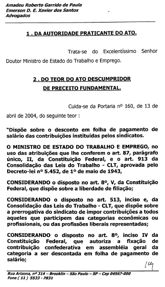
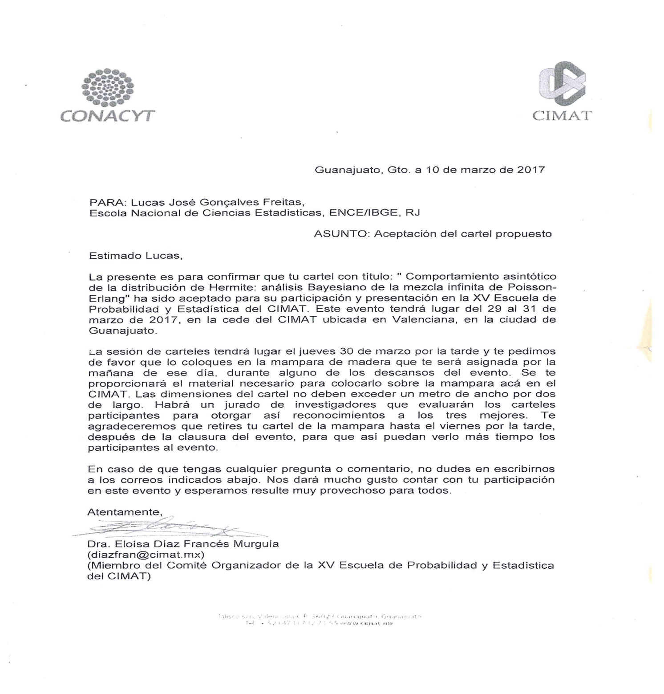
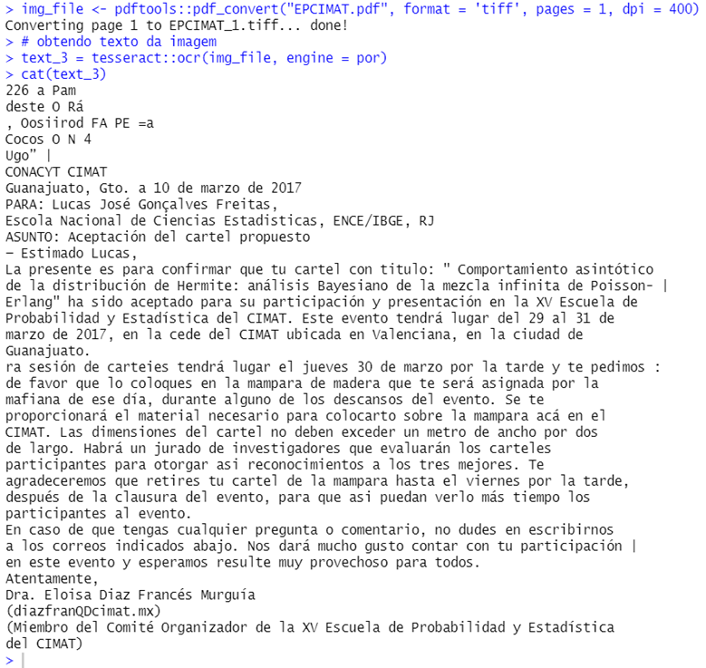
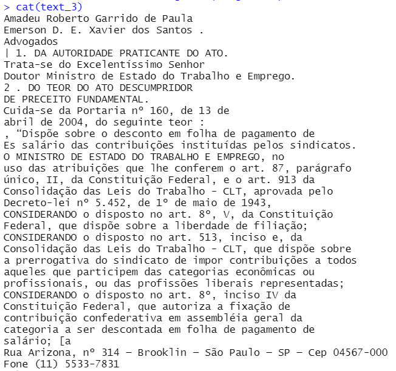
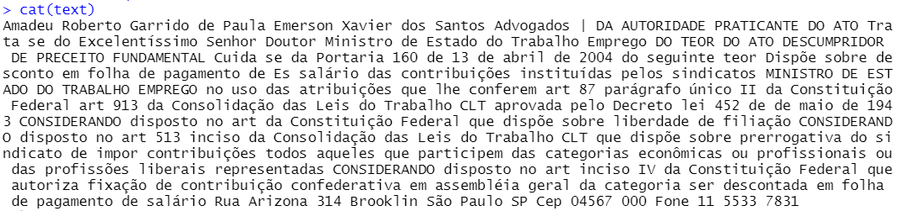
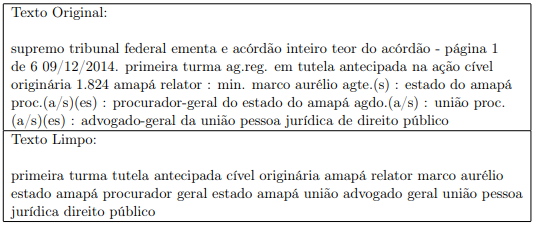
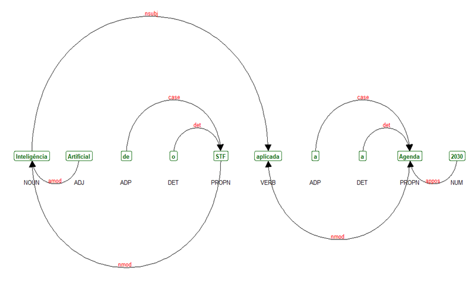
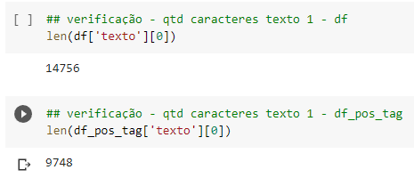

| Limpeza | Tarefa |
|---|---|
| Texto bruto – sem limpeza | Contagem de palavras |
| Texto limpo – remoção stopwords e caracteres especiais | Algoritmos da família SVM e Naive Bayes, similaridade e clusterização |
| Texto limpo – remoção stopwords e caracteres especiais associada à atividade de pos tag | Redes neurais e algoritmos CatBoost |
3 Entrada, leitura e limpeza dos dados em PDF
Os principais dados de entrada da RAFA são textos de petições iniciais e acórdãos de processos do STF. Tratam-se de arquivos em formato .PDF que podem ser nato digitais ou imagens. Imagens são típicas em processos digitalizados e exigem um passo de OCR para obtenção do texto. Um exemplo de processo que precisa de OCR é dado pela Figura 3.1:

Nos casos onde o PDF contém fotos, imagens digitalizadas, manchas ou bordas é necessário utilizar pacotes de ocerização. Em linhas gerais, a atividade de OCR nada mais é do que extrair texto de imagens. Entre as iniciativas mais populares de OCR, destaca-se o Tesseract. Trata-se de um projeto desenvolvido em C e C++ pela empresa HP e mantido temporariamente pelo Google, que está atualmente disponível no Github. Reúne redes neurais de arquiteturas LSTM com foco em reconhecimento de caracteres de texto em imagens de extensão .PNG, .JPEG e .TIFF. Pode ser utilizado em Python e R, como o script tesseract_pt_R mostra. Como exemplo, pode-se avaliar a imagem a seguir:

Trata-se de uma carta de aceitação em um congresso. O PDF, que será disponibilizado no arquivo zip, não permite seleção do texto. É apenas uma imagem digitalizada. Ao executar parte dos códigos que estão presentes no script tesseract_pt_R temos o seguinte objeto em R:

Como existem manchas no papel e sombras decorrentes da iluminação local, alguns caracteres não presentes no texto acabam surgindo na ocerização. Isso é normal. O objeto em R, no entanto, deixa claro que, assim como em um texto nato digital, o conjunto de caracteres obtido via OCR tem potencial para se tornar claro e totalmente legível por máquina, depois de alguns passos de limpeza. Para avaliar o desempenho do Tesseract em textos jurídicos, a figura seguinte mostra o texto resultante de OCR no processo ADPF 56 (referenciado na Figura 3.4):

Que com algum esforço de limpeza, como retirada de espaços em branco desnecessários e remoção de caracteres especiais e inúteis, resulta no seguinte texto limpo:

Quando o arquivo em PDF é nato digital, o processo de leitura se torna mais fácil e rápido. Em linguagem R, por exemplo, existe o pacote pdftools, que executa muito bem a leitura. Em Python, é possível usar os pacotes PyMuPDF e PyPDF2, ambos de fácil instalação no ambiente virtual do Google Colab. Quando não há necessidade de ocerização, é possível fazer a leitura de muitos processos em poucos segundos.
Quando os processos de entrada são lidos e seus textos estão contidos em objetos da linguagem R e Python, é possível iniciar a limpeza dos textos. A próxima seção se ocupará desta fundamental tarefa em processamento de linguagem natural.
3.1 Limpeza dos textos jurídicos
A limpeza dos textos é parte fundamental em qualquer fluxo de processamento de linguagem natural (NLP) e para textos técnicos adquire ainda maior importância. Dado que o processamento de textos por máquinas normalmente utiliza palavras como unidade básica, a etapa de limpeza serve ao propósito de deixar o texto mais denso e livre de palavras desnecessárias para o entendimento do objeto central, chamadas stopwords ou palavras de parada. Caracteres especiais como marcadores de pontuação, por exemplo, podem tornar os textos difíceis de processar e por isso também devem ser removidos. Computadores lidam melhor com números do que com strings e a etapa de limpeza também serve ao objetivo de tornar os textos menores, melhorando, assim, a capacidade de processamento dos modelos de NLP.
A natureza dos textos alvo de limpeza faz toda diferença na própria limpeza, dado que as próprias stopwords podem mudar de área para área. Palavras de parada jurídicas, por exemplo, em nada se parecem com palavras inúteis de outros ramos, da mesma maneira que, em textos literários, a limpeza se torna ainda mais complicada, dado que os autores usam recursos de estilo não necessários em textos técnicos. Desta forma, é importante frisar que cada problema de NLP exige uma limpeza de textos específica. Em programação, tarefas muito específicas normalmente exigem emprego simultâneo de pacotes e funções customizadas. Pacotes são amplos conjuntos de funções, e no caso de NLP, devem ser complementados com funções criadas especificamente para o problema em tela, como no caso da limpeza de textos. Em linguagem R, há um enorme ecossistema de pacotes para manipulação/limpeza de textos, como o stringr, stringi, família de pacotes quanteda, text, tidytext, udpipe, entre outros. Na iniciativa RAFA, especificamente no projeto R, o script funcoes contém ferramentas customizadas de limpeza e organização dos textos e o script limpeza executa, efetivamente, a tarefa de limpar as peças jurídicas. Em Python, a etapa de limpeza é feita ao longo do notebook, através de list comprehensions e manipulação de dicionários/sets. Em ambas as linguagens, os códigos de limpeza de textos fazem uso intenso de regex (expressões regulares) e pos tag, que por ser uma atividade dotada de significado próprio em NLP, será melhor explicada em seções subsequentes.
A etapa de limpeza dos textos é tão importante que se converte em uma feature dos problemas em si, em alguns fluxos de NLP. Isso significa que, dentro do mesmo problema, a limpeza pode mudar de acordo com a tarefa específica a ser realizada. Na iniciativa RAFA existem limpezas diferentes para cada algoritmo/tarefa, resumidas na tabela abaixo:
Um exemplo de limpeza pode ser visto na figura a seguir, onde se nota que o texto se torna menor e mais denso:

3.2 Tarefa Pos Tag
A atividade de pos tag, do inglês part of speech tagging, é uma espécie de classificação gramatical de cada palavra em um texto. Trata-se de uma tarefa que pode ser intermediária, como no caso da iniciativa RAFA, ou a própria tarefa de interesse em fluxos de NLP. As etiquetas (tags) mais comuns na maioria dos idiomas são ADJ (adjetivo), ADV (advérbio), NOUN (substantivos), PROPN (nomes próprios) e VERB (verbos). Uma lista exaustiva das tags disponíveis no pacote spacy da linguagem Python está disponível neste link. A figura a seguir mostra um ajuste pos tag feito em linguagem R na frase “Inteligência artificial do STF aplicada à Agenda 2030”:

Pode-se notar que a atividade pos tag etiqueta corretamente os termos da frase e há imenso potencial de utilização de tais etiquetas em outras tarefas de NLP, especificamente em limpeza de textos. Considerando que os textos devem ser densos e que remover partes desnecessárias é fundamental para diminuir a complexidade computacional do processamento, é razoável pensar em uma camada de pos tag posterior à remoção de caracteres especiais, mantendo apenas palavras com tags de verbo e nomes, por exemplo. A Figura 3.8 mostra exemplos do tamanho de um texto bruto e seu correspondente limpo com pos tag em linguagem Python:

Importante notar a significativa diferença em número de caracteres. Isso pode ser decisivo para melhorar a etapa de pré-processamento dos textos e embedding, tarefa que será melhor explicada em seções subsequentes. Utilizando linguagem R, é possível fazer pos tag em português com o pacote udpipe1, desde que se faça o download do modelo “portuguese-gsd”. Este extrato de código está disponível no arquivo zip. Em Python, é possível associar o pacote spacy e o pipeline pt_core_new_lg disponível no repositório HuggingFace2. Os comandos para desempenhar esta atividade em Python estão no notebook de referência.
Maiores informações disponíveis em: https://ladal.edu.au/tagging.html#Dependency_Parsing_Using_UDPipe.↩︎
HuggingFace. Disponível em: https://huggingface.co/spacy/pt_core_news_lg/tree/main.↩︎